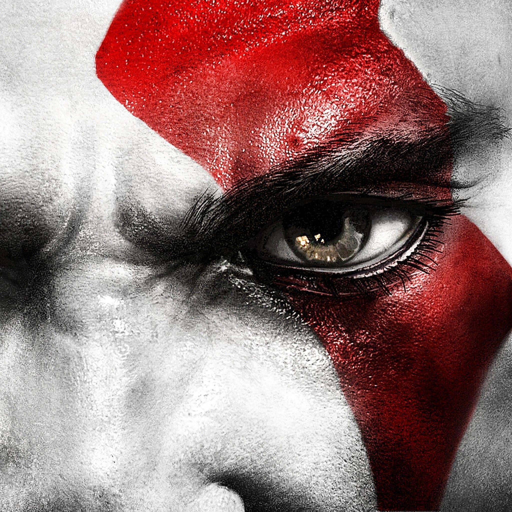

The benfit of Dragon Age is a compelling blend of deep role-playing, engaging characters, and meaningful choices with significant consequences

The benefits of The Witcher is the exeptional story telling

The benefits of The Legend of Zelda: Breath of the Wild is the open world design
The benefits of God Of War is the compelling story
The benefits of Sekiro: Shadows Die Twice is the second chance it offers in combat

the benfits of the The Last Of Us is ths impactful story telling
The benefits of It takes two is the pure co-op focus

The benefits of Elden ring is the challenging gameplay

The benefits of Baldurs Gate 3 is the rish recreative world

.png) Home
Home